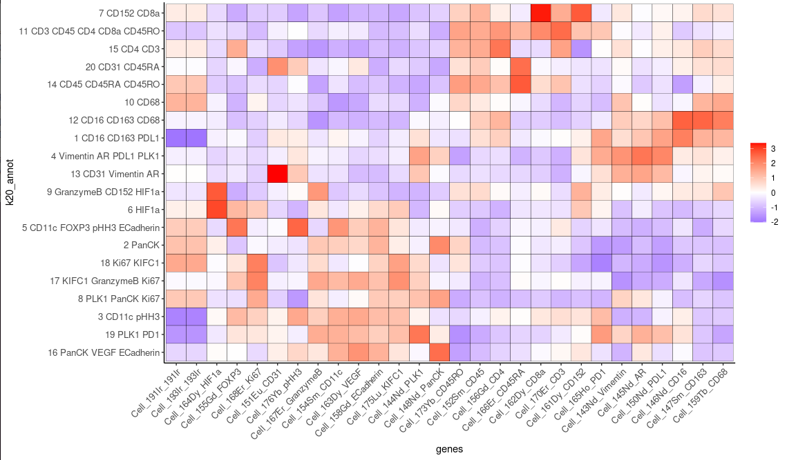
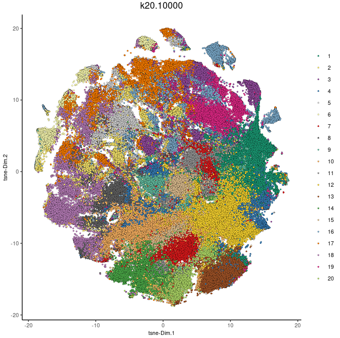
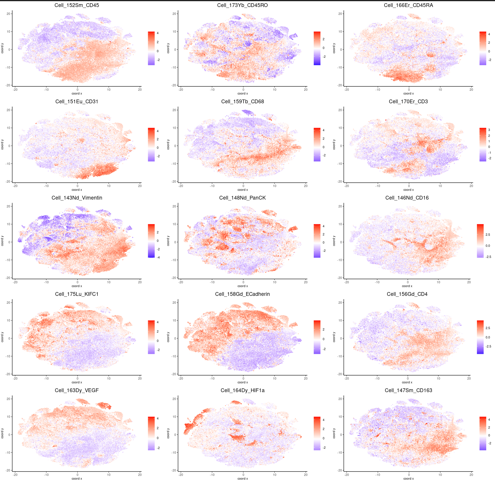

IMC clustering visualization tutorial
library(Giotto)
x<-load("cytof_test.RData")
kmeansk20<-read.table("frequency.kmeans.k20iter10000", head=T)
colnames(kmeansk20) <- c("cell_ID", "k20.10000")
cytof_test=addCellMetadata(cytof_test, new_metadata=kmeansk20, by_column=T, column_cell_ID="cell_ID")
pDataDT(cytof_test)
clusters_cytof = c("1 CD16 CD163 PDL1", "2 PanCK", "3 CD11c pHH3", "4 Vimentin AR PDL1 PLK1", "5 CD11c FOXP3 pHH3 ECadherin", "6 HIF1a", "7 CD152 CD8a", "8 PLK1 PanCK Ki67", "9 GranzymeB CD152 HIF1a", "10 CD68", "11 CD3 CD45 CD4 CD8a CD45RO", "12 CD16 CD163 CD68", "13 CD31 Vimentin AR", "14 CD45 CD45RA CD45RO", "15 CD4 CD3", "16 PanCK VEGF ECadherin", "17 KIFC1 GranzymeB Ki67", "18 Ki67 KIFC1", "19 PLK1 PD1", "20 CD31 CD45RA")
names(clusters_cytof) = c(1,2,3,4,5,6,7,8,9,10,11,12,13,14,15,16,17,18,19,20)
cytof_test=annotateGiotto(cytof_test, annotation_vector=clusters_cytof, cluster_column="k20.10000", name="k20_annot")
plotMetaDataHeatmap(cytof_test, expression_values="norm", metadata_cols=c("k20_annot"), show_values="zscores")
library(ggplot2)
pp<-plotMetaDataHeatmap(cytof_test, expression_values="norm", metadata_cols=c("k20_annot"), show_values="zscores")
pp + coord_flip()
Results

load("cytof_test.aug13.RData")
library(Giotto)
plotTSNE(cytof_test, cell_color="k20.10000", show_center_label=F)
Results

load("cytof_test.aug13.RData")
library(Giotto)
dimGenePlot(cytof_test, expression_values="norm", genes=c("Cell_152Sm_CD45", "Cell_173Yb_CD45RO", "Cell_166Er_CD45RA", "Cell_151Eu_CD31", "Cell_159Tb_CD68", "Cell_170Er_CD3", "Cell_143Nd_Vimentin", "Cell_148Nd_PanCK", "Cell_146Nd_CD16", "Cell_175Lu_KIFC1", "Cell_158Gd_ECadherin", "Cell_156Gd_CD4", "Cell_163Dy_VEGF", "Cell_164Dy_HIF1a", "Cell_147Sm_CD163"), cow_n_col=3, point_size=1, dim_reduction_to_use="tsne", dim_reduction_name="tsne", point_border_stroke=0)
Running Command
python3 km2.test.py bothResults
